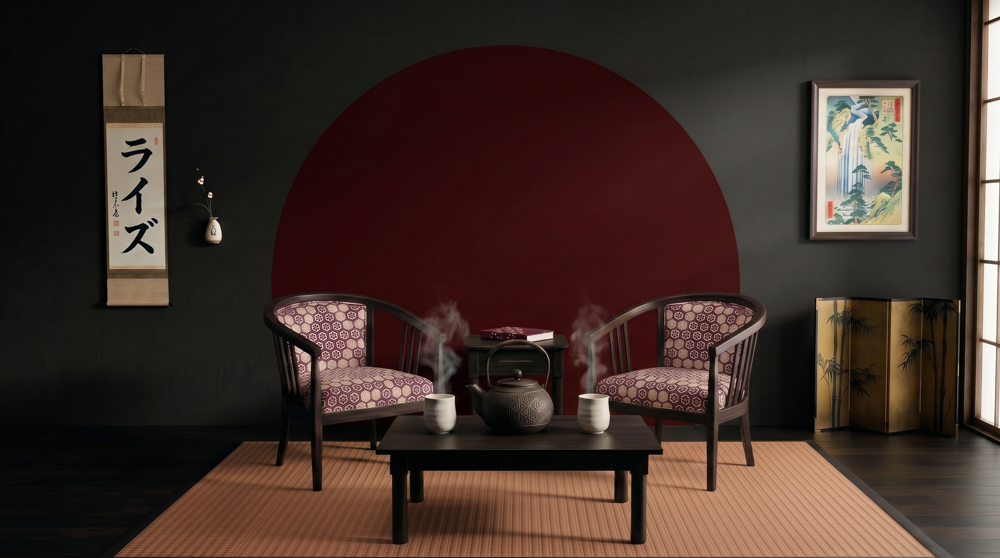
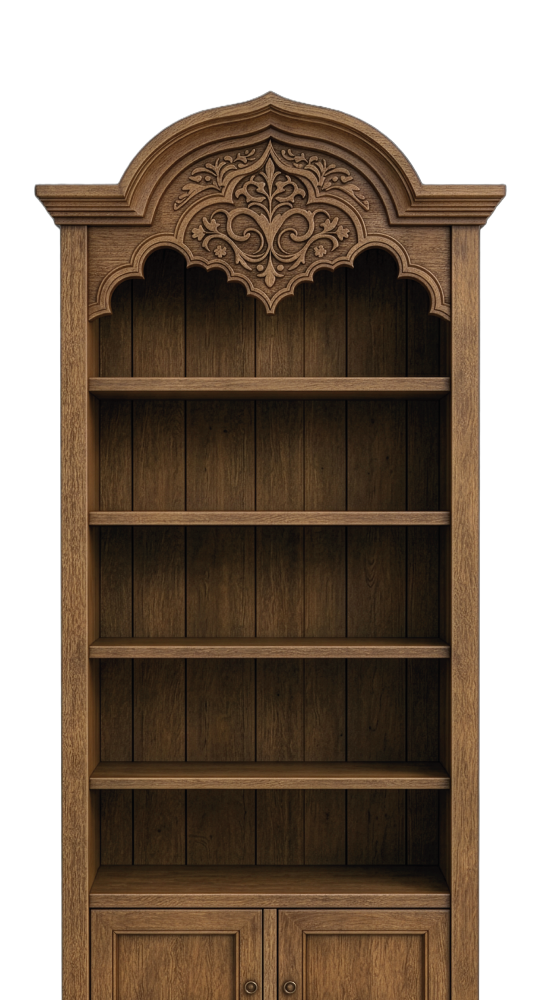
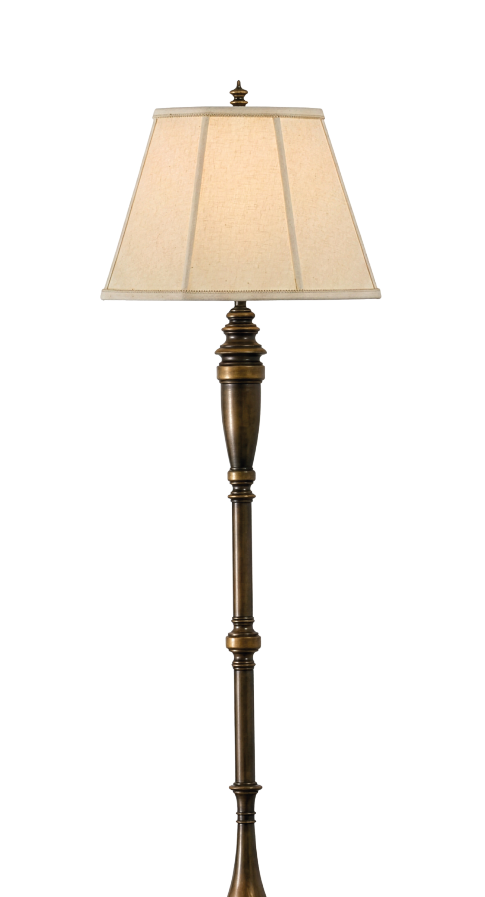
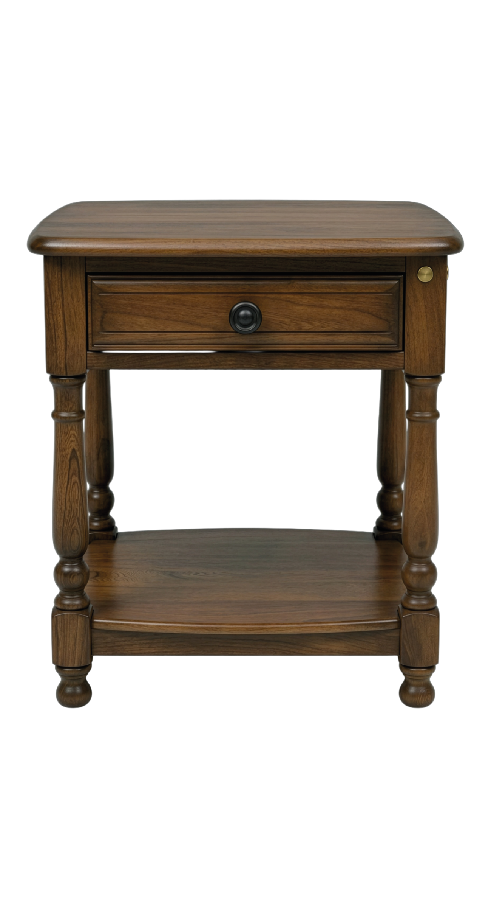
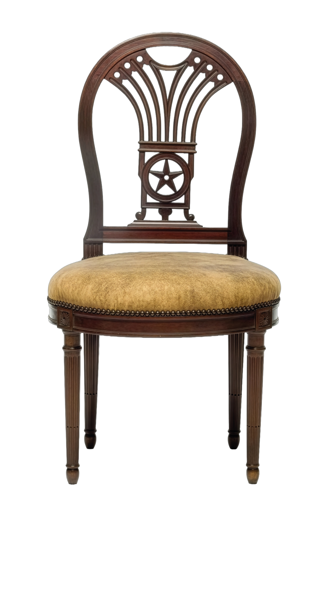
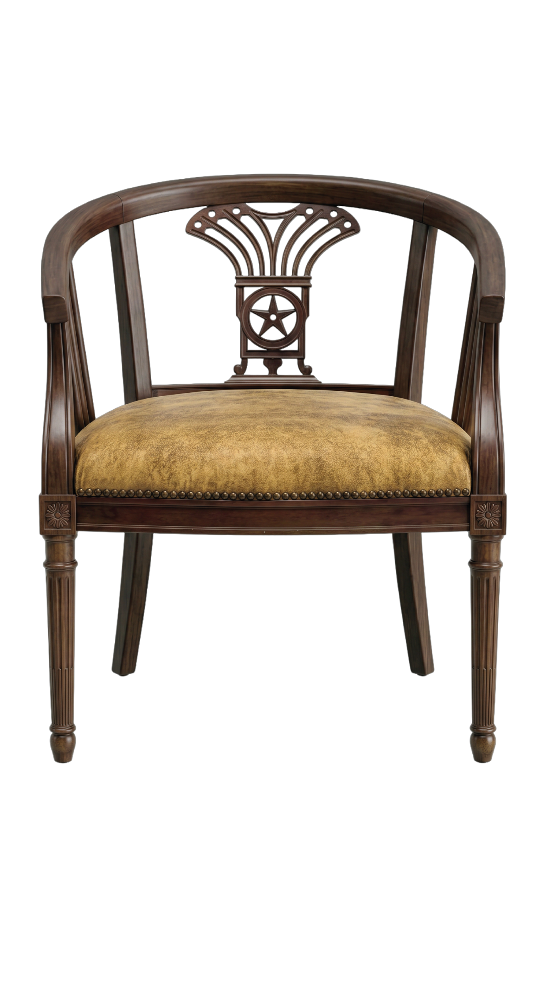
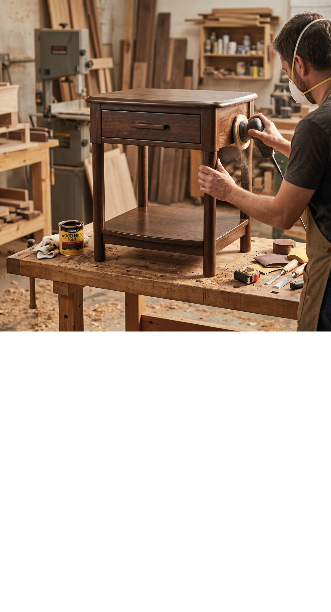
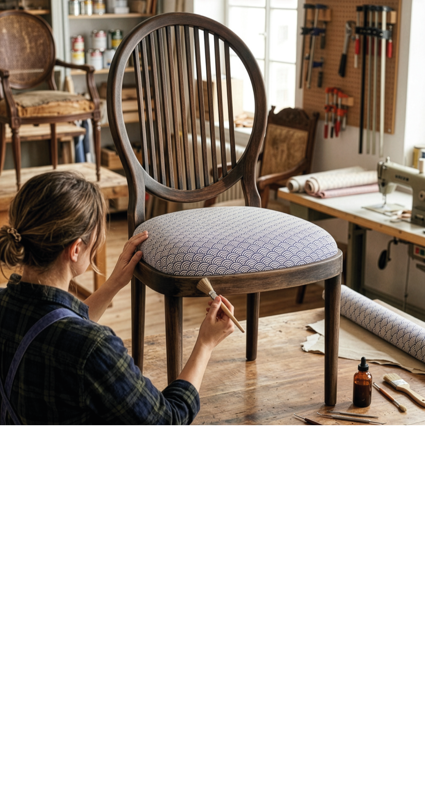
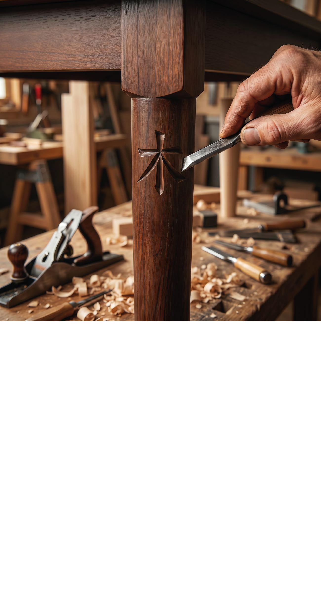

Diseño limpio
Eliminamos lo innecesario para que cada pieza exprese su unica y verdadera esencia.


Donde tu mueble renace con otra alma.
Ver cursosEn RAÍZ no cambiamos objetos. Despertamos su energía y reinterpretamos lo cotidiano mediante una estética que une tradición japonesa y diseño contemporáneo.
Eliminamos lo innecesario para que cada pieza exprese su unica y verdadera esencia.
Tonos inspirados en la naturaleza japonesa para transmitir calma, armonía y equilibrio.
Patrones tradicionales reinterpretados para crear muebles únicos y contemporáneos.
Descubrí cómo piezas con años de historia vuelven a cobrar vida mediante procesos de restauración inspirados en la estética japonesa.

Renacer y función
Renacer y función
Un armario sólido que guarda la memoria de lo antiguo y se reinventa con planos claros y detalles vibrantes para el presente.

Lo antiguo y lo nuevo
Lo antiguo y lo nuevo
Una lámpara que respeta su base histórica y se transforma con tonos modernos, iluminando con serenidad y contraste contemporáneo.

Función y belleza
Función y belleza
Una mesita de luz cotidiana transformada en pieza delicada y moderna, que aporta intimidad y estilo con cada detalle.

Silencio y equilibrio
Cómoda de Roble
Una silla que conserva la esencia artesanal de la madera y se renueva con acabados claros, transmitiendo ligereza y calma en cada uso.

Tradición y confort
Tradición y confort
Un sillón restaurado que combina la raíz cálida de lo clásico con tapizados frescos, ofreciendo un descanso profundo y elegante.
Cada restauración se realiza completamente de forma manual.
Piezas recuperadas y transformadas con una nueva identidad.
Diseños inspirados en la estética japonesa contemporánea.
Elegí una combinación de colores y descubrí cómo cambian el acabado, el tapizado y la personalidad de la pieza.
Terminación mate que conserva la textura y la esencia de la madera.
Inspirado en los tonos tradicionales japoneses para transmitir calma y profundidad.
Inspirado en el caparazón de la tortuga japonesa, símbolo de longevidad y equilibrio.
Una pieza que transmite equilibrio, elegancia y permanencia.

Descubrí algunos trabajos, detalles y momentos que forman parte de RAÍZ.


Descubrí técnicas de restauración, pintura y tapizado inspiradas en la estética japonesa.

Almacenamiento y lámparas que cobran vida con color y rejillas japonesas.

Transformá mesas y sillas con pintura, terminaciones nobles y tapizados.

Grabado artesanal que convierte cada superficie en una pieza única.
Una colección de piezas únicas desarrolladas bajo la identidad
de RAÍZ, disponibles en ediciones limitadas.
Los muebles cápsula recuperan lo esencial, piezas rústicas que se acercan más a la tradición que a lo moderno, mostrando la belleza de lo imperfecto y lo irrepetible.
Todo comienza con una evaluación del estado del mueble, seguida por una propuesta personalizada de restauración.
Existen niveles para principiantes y para personas con experiencia previa.
Sí. Cada proyecto puede adaptarse al estilo, necesidades y materiales elegidos por el cliente.
Si querés conocer más sobre los cursos, realizar una restauración o hacer una consulta, escribinos. Estaremos encantados de ayudarte.
Buenos Aires, Argentina
contacto@raiz.com
Lunes a Viernes 09:00 - 18:00